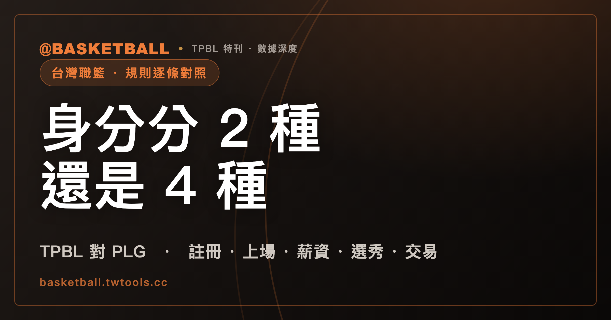

TPBL 把球員分成 2 種身分，P. LEAGUE+ 分成 4 種：兩聯盟規則逐條對照
截至 2026 年 8 月 6 日，TPBL 依 2026 年 5 月 4 日修訂版《台灣職業籃球大聯盟賽務規章》運作，P. LEAGUE+ 依 2025 年 10 月 21 日公告版《P. LEAGUE+ 賽務章程》運作。兩份規章對球員身分、註冊名額、外籍球員薪資與選秀辦法的寫法並不相同，有些制度只寫在其中一份裡。

TPBL vs. P. LEAGUE+ · 規則對照｜身分認定 · 註冊名額 · 上場限制 · 薪資 · 選秀 · 交易 · 賽制
把兩份規章放在一起，第一個對不上的地方是名字。TPBL 的主辦單位是「社團法人台灣職業籃球大聯盟」（TPBL 賽務規章第一章第二條）。P. LEAGUE+（以下簡稱 PLG）章程裡的協會，全名是「社團法人台灣職業籃球聯盟」（PLG 賽務章程第 2.1 條）。兩個法人名稱只差一個「大」字。
再往下翻，差的就不只是名字。同樣一個詞「外籍球員」，在兩份規章裡指的不是同一群人。TPBL 把球員身分分成本土、外籍兩類；PLG 分成本土、華裔、外籍生、外籍四類。所以「這支球隊有幾個外援」，在兩個聯盟不能直接對著比，得先確認算的是哪一類。
台灣目前由兩個職業籃球聯盟並立運作，成因與 2025 年夏天的合併談判有關，完整脈絡見為什麼台灣有兩個職籃聯盟。這篇只談現行規則怎麼運作，每一項制度都標出章條，可以自己回原文對照。
官方條文從頭到尾寫「外籍球員」，「洋將」兩份規章加起來只出現 1 次
「洋將」是媒體與球迷的用語。TPBL 賽務規章全文只有 1 個「洋將」，出現在第三章第五條附則三的陰陽合約罰則裡（罰則之一是「減少下賽季洋將註冊名額」）。PLG 賽務章程全文則是 0 個。兩份規章寫到這群球員時，用的都是「外籍球員」。
身分怎麼分，兩邊差很多。
| 項目 | TPBL（賽務規章第二章第五條） | PLG（賽務章程第 4.1 條、第 29 條） |
|---|---|---|
| 身分類別 | 本土球員、外籍球員，共 2 類 | 本土球員、華裔球員、外籍生球員、外籍球員，共 4 類 |
| 本土球員 | 非以歸化取得中華民國國籍，且持有身分證或護照者；另有 3 種與歸化相關的認定路徑 | 具中華民國國籍，且於年滿 16 歲前辦理戶籍登記或依規定取得護照，依國際籃球總會（FIBA）規定能代表國家隊出賽，且不屬於歸化球員者 |
| 華裔球員 | 身分定義條文中沒有這一類 | 生父母之一方持有中華民國國民身分證或護照，且本人持有中華民國華僑身分證明書，或未於年滿 16 歲前辦理戶籍登記、取得護照者 |
| 外籍生球員 | 身分定義條文中沒有這一類 | 不符合本土與華裔資格，且於年滿 27 歲前於臺灣地區高中、大專籃球聯賽連續註冊滿 2 年以上者 |
| 外籍球員 | 不具中華民國國籍，或不符合本土球員資格認定者 | 不具中華民國國籍，且不符合外籍生球員資格者；情形特殊者由聯盟個案認定 |
有一個細節容易被寫過頭。TPBL 的身分定義條文確實只有本土與外籍兩類，但「華裔」這個詞在規章裡沒有完全消失：第二章第六條五與第六條七之 5，兩處註冊文件條款都寫著「外籍球員或尚具華裔身分之球員」須另外提供勞動部核發的工作許可。也就是說，華裔在 TPBL 不是一個獨立的身分類別，但註冊文件的規定裡還留著這個詞。
反過來看 PLG，「華裔」在章程全文出現 13 次，涵蓋身分定義、註冊人數、登錄人數、註冊文件、可交易對象、可逕行簽約對象。華裔在 PLG 是有名額、有登錄限制、會影響交易的實際身分。
至於歸化球員，PLG 章程全文「歸化」只出現 1 次，就在第 4.1 條本土球員定義的那句排除語裡；章程沒有另設歸化球員的專條。身分認定若有爭議，第 29.3 條規定球員得向聯盟申請個案審查。
TPBL 的歸化球員取得本土資格後轉隊，身分會退回外籍球員
TPBL 對歸化球員寫得比較細，值得單獨拆開看。賽務規章第二章第五條列出 3 條與歸化有關的路徑：
第一條路徑是「以歸化取得中華民國國籍，並得以本土球員身分參與國家隊者」，視為本土球員；不得者則視為外籍球員。
第二條路徑是「以歸化取得中華民國國籍，且曾代表國家隊出賽，並於本聯盟單一球隊註冊滿 3 季者」，可視為本土球員。這一類球員各球隊只限註冊 1 名。條文還加了兩個限制：其一，在中華民國籃球協會公告國家隊名單的那個賽季，註冊場次要達到例行賽總場次的 3 分之 2，才算 1 個完整賽季，沒達標就從下一賽季開始重算；其二，這類球員取得本土球員身分後，如果轉隊就恢復外籍球員身分，要重新在單一球隊註冊滿 3 個完整賽季，才能再取得本土資格。
第三條路徑是聯盟保留的裁量空間：基於 FIBA 秘書長認定的本土球員特例原則，聯盟得參酌其認定方向，保有身分資格認定的最終裁量權。
換句話說，TPBL 的本土資格是綁在球隊上的，不是綁在球員身上。同一個人換一支球隊，計時器歸零。PLG 章程沒有對應的條文，因為 PLG 的本土球員定義直接把歸化球員排除在外。
註冊名額：TPBL 本土 9 到 14 名再加 4 名外籍，PLG 全隊 13 到 16 人裡外籍限 3 名
兩個聯盟連「註冊人數怎麼算」的寫法都不一樣。TPBL 分開規定本土與外籍的名額，PLG 規定全隊總人數再從中限制外籍。
| 項目 | TPBL（第二章第六條八） | PLG（第 31 條） |
|---|---|---|
| 全隊註冊人數 | 完成開季註冊後，名單須隨時維持 13 名以上 | 最少 13 人，最多 16 人 |
| 本土球員 | 至少 9 名，至多 14 名 | 章程未另定本土人數上下限 |
| 外籍球員 | 各球團註冊 4 名 | 限 3 名 |
| 華裔與外籍生 | 身分定義中沒有這兩類 | 得有 2 名華裔加 1 名外籍生，或 1 名華裔加 2 名外籍生 |
| 教練團 | 至少註冊 2 名（含 1 名總教練） | 章程於第 6.1.2 條要求球團設有教練團，未定註冊人數 |
TPBL 的外籍名額有一個例外：代表聯盟出賽東亞超級聯賽（EASL）的球團，該季得多註冊 1 名由 EASL 認定的亞洲外籍球員，這名球員在聯盟的註冊與上場資格比照外籍球員，而且註冊截止日之後，該隊須恢復 4 名外籍球員（第二章第六條八之 2）。
註銷之後想重新註冊，兩邊的限制也不同。TPBL 第二章第六條三規定，本土球員個人重新註冊 2 次、全隊本土總額 5 次；外籍球員個人 2 次、全隊外籍總額 5 次；而且球員被註銷後須滿 3 週，球團才得再次註冊。PLG 第 33.1 條規定，賽季中註銷球員至少為 1 個月或以上，方得重新註冊，章程沒有次數上限的規定。PLG 另有一條 TPBL 沒有的：第 31.3 條「傷兵註銷時可不須解約」。
註冊截止日兩邊都不是固定日期。TPBL 第二章第六條九寫「註冊截止日為例行賽 3 分之 2 場次」，確切日期依各球季賽務組公告。PLG 第 33.1 條寫「每年球季註冊截止日由決策委員會訂定之」。這一項每季都可能不同，查的時候要認當季公告。
外籍球員能不能中途換聯盟，兩邊的條文剛好相反。TPBL 第二章第六條五寫「外籍球員同一球季僅能註冊於同一球團名單上」。PLG 第 33.2 條寫外籍球員在同一球季中僅得註冊於同一球團，但「曾註冊於臺灣其他職業籃球聯盟者不在此限，得在同一季於本聯盟註冊」。也就是說，一名外籍球員在同一個賽季裡離開另一個台灣職籃聯盟之後，PLG 的章程為他留了一個明文的入口。
每場登錄與上場：兩聯盟都採四節 8 人次，延長賽的外籍限制只有 TPBL 寫進規章
登錄指的是比賽當天提交的出賽名單。PLG 第 4.6 條直接把「登錄」定義成「比賽當天 10 點前提出的球員出賽名單」，第 35.1 條要求各球團於比賽當日上午 10 點前提交，未經登錄的球員不得上場。TPBL 第四章第二條四則要求球團在比賽當天 10 點 30 分前，把當日登錄名單與球衣顏色傳給聯盟賽務窗口。
| 項目 | TPBL（第四章第二條、第四條） | PLG（第 36 條、第 59.4 條） |
|---|---|---|
| 每場登錄人數 | 至少 8 名，至多 14 名 | 至少 8 名，至多 16 名 |
| 每場外籍球員登錄 | 除特殊因素經聯盟許可外，至少 2 名、至多 3 名 | 登錄名單包含 3 名外籍球員；且應包含至少 2 名外籍球員，但有受傷、入境或工作證延遲等特殊事由並報請聯盟核備者，不在此限 |
| 華裔與外籍生登錄 | 身分定義中沒有這兩類 | 2 名華裔加 1 名外籍生，或 1 名華裔加 2 名外籍生 |
| 外籍球員出賽制 | 四節 8 人次 | 4 節 8 人次制 |
| 場上外籍球員 | 場上至多 2 名外籍球員同時上場 | 每節限 2 人次外籍球員上場 |
| 場上外籍生 | 身分定義中沒有這一類 | 場上至多只能 1 名外籍生 |
| 延長賽 | 場上可至多有 2 名外籍球員同時上場 | 第 59.4 條只寫「每節」，章程未另訂延長賽的外籍球員上場規定 |
| 違反的罰則 | 判總教練延誤比賽技術犯規，登記為 C1 | 得處書面警告或科、併科罰款最高新臺幣 10 萬元 |
「四節 8 人次」是兩邊都有的框架，但兩份規章描述場上限制的措辭不一樣：TPBL 第四章第四條三寫的是「場上至多兩名外籍球員同時上場」，PLG 第 59.4 條寫的是「每節限 2 人次外籍球員上場」。一個限制的是場上同時人數，一個限制的是每節的上場人次。
比賽本身的規則兩邊倒是一致，而且都以 FIBA 規則為基礎再加單行條款。TPBL 第四章第四條一與 PLG 第 59.2 條寫的都是：每節 12 分鐘共 4 節，中場休息 15 分鐘，個人犯規累計 6 次喪失該場資格，單節團隊犯規累計第 5 次進入加罰。TPBL 另外明訂每一延長賽為 5 分鐘。
登錄名單提交後要換人，兩邊都設了門檻。TPBL 第四章第二條五規定，非因傷病或個人特殊因素不得更換，因傷更換最晚須於表定開賽時間前 90 分鐘提出醫師診斷證明並經聯盟賽務確認。PLG 第 37.1 條寫的是比賽時間前 2 小時，且須提供醫學中心、區域醫院或地區醫院開立的診斷證明。
TPBL 還有一條 PLG 章程裡沒有的：第四章第二條六規定，賽前非因不可抗力因素而球隊登錄球員少於 8 人，該場賽事以 0 比 20 落敗。
薪資：TPBL 把外籍球員總額上限寫成每月美金 11 萬元，PLG 把金額交給決策委員會另訂
這一節是兩份規章差距最大的地方，差的不是數字大小，是有沒有寫進規章。
TPBL 賽務規章第三章第二條四之 1 直接寫明：各隊外籍球員薪資總額度上限為每月美金 11 萬元，須對應 4 名外籍球員；單一外籍球員每月薪資不得低於美金 5,000 元。條文後面還加了一句關鍵的但書，這兩個金額「皆為扣除所有稅款後，球員實得薪資」。要注意這是整隊總額上限，不是單一球員的上限。
PLG 賽務章程第 55.4 條寫的是：「球團註冊之三名外籍球員，其月薪合計上限由決策委員會訂定之。」章程本身沒有金額。決策委員會依第 2.2.1.3 條由執行長與各球團總經理各 1 人組成，依第 2.2.1.5 條以委員 3 分之 2 以上出席、出席委員 5 分之 4 以上同意決議。所以 PLG 的外籍薪資上限是一個存在的制度，但金額不在這份公開章程裡。
本土與新人的薪資下限，兩邊都寫在規章裡，可以直接對照。
| 項目 | TPBL（第三章第二條） | PLG（第 51.1.2 條、第 55.2 條） |
|---|---|---|
| 一般最低月薪 | 本土球員保障最低月薪新臺幣 5 萬元，最高月薪不設上限 | 球員之月薪不應低於新臺幣 4 萬元（條文未區分身分） |
| 選秀第 1 輪第 1 順位 | 每月至少新臺幣 9 萬元 | 不應低於新臺幣 9 萬元 |
| 第 1 輪第 2 順位 | 每月至少新臺幣 8 萬元 | 不應低於新臺幣 8 萬元 |
| 第 1 輪第 3 順位 | 每月至少新臺幣 7 萬元 | 不應低於新臺幣 7 萬元 |
| 第 1 輪其餘順位 | 每月至少新臺幣 5 萬元 | 不應低於新臺幣 6 萬元 |
| 第 2 輪 | 每月至少新臺幣 5 萬元（含之後輪次） | 不應低於新臺幣 5 萬元 |
| 第 2 輪之後 | 同上 | 其餘於新人選秀會獲選拔者不應低於新臺幣 4 萬元 |
前 3 個順位完全相同，第 4 順位之後開始分岔：TPBL 從第 1 輪第 4 順位起一路是 5 萬元，PLG 則是第 1 輪其餘順位 6 萬元、第 2 輪 5 萬元、再往後 4 萬元。
國手待遇兩邊都有加碼條款，但單位不同，不能直接相減。TPBL 第三章第二條二規定，曾獲選為 FIBA 5x5 國際正式錦標賽中華代表隊者，至少保障年薪新臺幣 120 萬元；條文並且界定了資格範圍（世界盃會內賽、亞洲盃會內賽、亞洲運動會的 12 人名單，世界盃與亞洲盃資格賽則須同一階段兩場比賽均登錄出賽），已簽約後才入選者，須於賽事結束下個月起調整。PLG 第 51.1.2 條第 2 款規定的是月薪：曾入選中華男子籃球代表隊，參與 FIBA 舉辦的 5 對 5 世界盃、亞洲盃、上述兩項賽事的資格賽、亞洲運動會、奧運，並於該次賽事至少登錄 2 場比賽者，月薪不應低於新臺幣 12 萬元。TPBL 那條寫的是年薪下限，PLG 那條寫的是月薪下限，而且 PLG 這一條放在新人球員契約的章節裡，適用對象是新人（第 41.3 條另規定選秀落選的自由球員符合資格者準用）。
還有幾條薪資規定只出現在一份規章裡，另一份沒有對應條文。TPBL 第三章第二條四之 2 規定，外籍球員例行賽期間薪資以 8 個月為限，晉級季後賽（含挑戰賽、季後賽、冠軍賽）則可多支付 1 個月至該賽季結束；四之 4 規定外籍球員合約內的例行賽獎金總額不得超過年薪總額的 10%；第五項要求球團每月提供註冊球員的薪資匯款單並附管理階層簽核給聯盟。PLG 第 53.2.1 條則規定球員契約以年約為原則，起訖期間為 7 月 1 日至隔年 6 月 30 日，但前一季非效力於 PLG 球團的自由球員、開季 10 日後才簽約者、以及外籍球員這 3 種情形不受年約限制，起訖期間為簽約日至隔年 6 月 30 日。
兩邊都把陰陽合約寫成重罰事項。TPBL 第三章第五條三列的裁罰包括取消該賽季成績、追回該賽季所有獎項與獎金、依兩份合約的總價差罰款、相關人員禁賽、減少下賽季洋將註冊名額，或取消該球團參賽權。PLG 第 58.2 條寫的是情節重大者得採停權整季以上、契約作廢等處分並加重裁罰。
順帶一提一條容易被寫過頭的規定：TPBL 第三章第三條規定，符合資格的外籍教練與球員經聯盟審查通過後，「聯盟得協助推薦國發會（國家發展委員會）就業金卡申請」。條文用的是「得」，不是「應」，也不是「會」。
PLG 章程第 47 到 51 條寫滿選秀規則，TPBL 規章只留一句話指向另一份文件
想從規章裡讀出選秀順位怎麼排，兩邊的體驗完全不同。
TPBL 賽務規章第六章第二條的全部內容是一句話：「選秀辦法（請參照社團法人台灣職業籃球大聯盟各賽季選秀辦法）」。選秀順位規則、抽籤與否、參選資格，都不在這份規章裡，而在另一份逐季訂定的選秀辦法。規章裡與選秀有關的，是新人簽約之後的事：第三章第四條規定球團於選秀會後取得契約交涉權，雙方須於選秀會結束後 45 日內簽訂新人球員契約；新秀合約為制式 2 加 1，前 2 年保證、第 3 年球隊選擇權；3 年結束後原球團擁有優先議價權，出價相同時有優先續約權。同條第四項還訂了拒絕報到的罰則：無故未在期限報到、拒絕報到、已簽約卻因個人意願解約者，經聯盟審查屬實不得再次參加新人選秀會，未來如決定再參加聯盟賽事，仍須向最初選秀球隊報到，並參加至少 2 加 1 年至合約期滿。
PLG 則把整套選秀制度寫進章程。
誰要進選秀：第 47 條規定，球團想與未曾與 PLG 任一球團締結契約的本土球員或外籍生球員簽約，須透過選秀會取得契約交涉權。第 39 條第 2 款則規定，球團得逕行簽約的球員限於外籍球員、華裔球員，以及具備自由球員資格的本土球員與外籍生球員。也就是說，PLG 的選秀涵蓋的是本土與外籍生的新人。
參選資格：第 47.1 條列出 4 條路徑，包括曾註冊於臺灣地區高中籃球甲級聯賽或大專籃球聯賽公開一級的本土球員（外籍生球員則須在前述聯賽連續註冊滿 2 學年以上）並檢附教練聯繫方式、曾註冊大專籃球聯賽公開二級並檢附教練推薦函、曾註冊海外同等學生籃球聯賽並檢附推薦函，以及不符前 3 款者須檢附 PLG 所屬球團教練、總經理或領隊的推薦函。臺灣高中籃球甲級聯賽的制度與賽季架構，另見HBL 高中籃球聯賽完全指南。
年齡：第 47.2 條規定參選球員應於選秀年度 12 月 31 日前年滿 19 歲；曾註冊大專籃球聯賽的在學學生，則應於選秀年度 8 月 31 日前年滿 21 歲，或完成大三以上的學業。
順位怎麼排：第 49.1 條規定選秀順序依前一球季排名決定。未取得季後賽資格的球團，順序優先於取得季後賽資格的球團；季後賽首輪淘汰的球團優先於進入總冠軍賽的球團；總冠軍賽落敗的球團優先於總冠軍球團。未進季後賽的球團之間，例行賽排名最後者為第一順位，其餘依排名倒推；季後賽首輪淘汰的球團之間，依前一季例行賽勝場數決定，勝場數較少者優先。例行賽成績相同時，依兩隊對戰成績決定，對戰成績較差者優先；對戰成績也相同，則比對戰勝負分，較低者優先。
選秀怎麼進行：第 49.2 條規定各球團依序選拔或放棄選秀權，每一輪順序都與前一輪相同，而且放棄選秀權的球團不得於下一輪再行選拔；待無球員可選或所有球團均放棄時，該年度選秀會結束。新加盟球團依第 49.3 條，順位居於前一球季例行賽排名最後者之前，並於首輪所有球團選拔完畢後擁有額外順位。
選完之後：第 50.1 條同樣是 45 日內簽約。第 50.2 條的拒簽罰則與 TPBL 相近：未與所選拔球團簽約或簽約後無故解約者，不得再次參加選秀會，若欲加入聯盟須向原選拔球團報到。第 51.1.1 條規定新人契約至少為 2 年保障契約，並附帶第 3 年球團選擇權。第 51.2.1 條給了原球團優先議約權，且明訂在契約結束後 7 日內其他球團不得接觸該球員，優先議約期間結束後其他球團才得接觸，出價相同時原球團有優先續約留人的權利。TPBL 第三章第四條三同樣有優先議價與優先續約的規定，但規章沒有寫具體的天數。
自由球員的門檻兩邊也不同。TPBL 第六章第一條把自由球員定義為未與任一球團簽有契約，並符合下列任一規範者：曾註冊過 TPBL、T1 LEAGUE、P. LEAGUE+、SBL 或他國同等級聯賽；曾參加上述聯賽選秀落選或未簽約，且未再註冊於各級學生聯賽；正式註冊本聯盟前年滿 25 歲；具有在中華民國或該國工作的資格。PLG 第 40 條與第 41 條則規定自由球員是年滿 19 歲、未與任一球團訂有契約者，並另列 4 種資格：履行完新人契約而原球團未提供合格報價（或未履行完但與球團合意終止契約）、曾註冊於 PLG 或各國頂級籃球聯賽並檢附 FIBA 聲明書、屬華裔或外籍球員者以及該年年底滿 27 歲的本土球員或外籍生球員、曾參與 PLG 選秀會但未獲選拔者。落選者若之後又註冊各級學生籃球聯賽，依第 41.2 條就不再符合自由球員資格，要加入 PLG 得重新參加選秀。
交易：兩聯盟都不准外籍球員被交易，也都不准拿連續兩年的首輪選秀權當對價
交易是兩份規章寫得最像的一節，連流程的時數都一樣。
TPBL 第六章第三條四規定：球團僅能以契約所屬的本土球員、選秀權或現金進行交易，外籍球員不得作為交易對象，且不得以連續兩年的首輪選秀權作為交易對價。
PLG 第 44.2 條規定球團僅能以契約所屬的本土球員、華裔球員和外籍生球員進行交易，外籍球員不得作為交易對象；第 44.3 條規定球團不得以連續兩年的首輪選秀權作為交易對價，於單次或多次交易中向其他球團換取球員或金錢。至於金錢與選秀權本身可作為交易標的，寫在第 42.1 條的交易定義裡。兩份規章都沒有寫這條首輪選秀權限制的由來。
交易窗口的起點兩邊一致，終點的寫法略有差別。TPBL 第六章第三條三寫交易起始時間為前一季總冠軍系列賽結束翌日中午 12 時起，至該賽季註冊截止日止，截止日依聯盟公告為主；而註冊截止日依第二章第六條九是例行賽 3 分之 2 場次。PLG 第 43 條寫交易期間自每年球季總冠軍系列戰結束後翌日開始，至球季例行賽的 3 分之 2，正式日期與時間依聯盟季前公告為準。
流程的時限兩邊相同：球團簽署交易協議後 24 小時內備齊文件送交聯盟；文件不齊或聯盟認為有違反規章之虞，得於收到後 12 小時內請球團補件或說明，並於收到補件後 12 小時內通知交易是否成立；否則聯盟應於收到交易案後 24 小時內發布交易公告，公告發布後交易才成立。要檢附的文件也一樣是 4 項：交易協議、球員契約、球員行為準則切結書，以及球員契約若有不可交易條款時的球員同意書（TPBL 第六章第三條五、PLG 第 45 條）。
交易之後球員的權益，PLG 第 46 條寫得比較完整：交易成立後球員與原球團的契約關係終止，新球團應完整承接該球員的契約，未經雙方同意不得為不利於球員的變更。TPBL 第六章第三條二則把誠信原則與承接契約併在同一項裡：交易應秉持誠實信用與互惠原則，不得明顯圖利於其中一方，並就交易球員的健康狀況如實告知，交易後應完整承接新球員的契約，未經球員同意不得為不利球員的變更。
兩份規章談的都是同一聯盟內球團之間的交易（TPBL 第六章第三條一、PLG 第 42.1 條都寫「本聯盟兩支以上之球團」）。跨聯盟交易的條文，兩份規章都沒有。
賽制與季後賽晉級只有 TPBL 規章寫得完整，PLG 章程沒有賽程規劃條文
TPBL 賽務規章第四章第一條把賽制寫得很具體：例行賽採單一球季共 7 隊、進行 6 輪循環賽，總場次 126 場，每隊 18 場主場與 18 場客場，各隊依例行賽勝率高低排名。勝率相同時依 FIBA 規則並依聯盟單行規定排序，依序比較例行賽整體戰績、對戰勝負關係、對戰得失分差、例行賽全體賽事總得失分差；若仍無法區分，則比較總籃板、總助攻、總抄截、總阻攻、總失誤、投籃命中率、罰球命中率等統計項目，各項目的比較順序由抽籤決定。
季後賽的晉級路徑也寫在同一條：例行賽前 3 名直接取得季後賽資格，第 4、5 名進行季後挑戰賽爭奪最後席次，第 6、7 名淘汰。季後挑戰賽採 3 戰 2 勝，主場分配 1 比 1 比 1，首場不進行賽事且第 4 名即保有 1 勝，正式賽事於第 5 名主場進行。季後賽共分兩組、採 5 戰 3 勝，主場分配 2 比 2 比 1，例行賽戰績較優者多 1 場主場；對戰組合是例行賽第 1 名對季後挑戰賽獲勝隊伍，例行賽第 2 名對第 3 名。總冠軍賽採 7 戰 4 勝，主場分配 2 比 2 比 1 比 1 比 1。
PLG 賽務章程的第八章名為賽事規範，內容是競賽規程、裁判制度、主隊賽事管理與聯盟賽事監督，沒有賽程規劃的條文。章程裡透露季後賽形狀的地方，是第 49.1 條排選秀順位時列出的 4 種賽季結果：未取得季後賽資格、季後賽首輪淘汰、總冠軍賽落敗、總冠軍。除此之外，季後賽有幾隊、打幾場、怎麼晉級，章程沒有規定。第 63 條只要求球團必須在例行賽球季開始前公布季票與票價等銷售資訊。
想對照北美職籃的聯盟架構與賽季形狀，可參考NBA 是什麼？聯盟架構完全指南。
規章查不到的 4 件事
有些讀者想找的答案，不在這兩份文件裡。列出來比硬湊一個數字有用。
第一，PLG 的例行賽場次與季後賽晉級方式。賽務章程沒有賽程規劃條文，這兩項要看聯盟每季的公告。
第二，PLG 外籍球員的月薪合計上限金額。第 55.4 條把金額交給決策委員會訂定，章程本身沒有數字。
第三，TPBL 的選秀順位規則與參選資格。賽務規章第六章第二條指向另一份「各賽季選秀辦法」，本文沒有取得那份文件，因此不對 TPBL 的選秀順位怎麼排下任何判斷。
第四，兩聯盟 2026-27 賽季的開打日期。截至 2026 年 8 月 6 日都還沒有公告。這一項本來也不是規章事項，兩份規章都寫明依各球季聯盟公告為準。
另外有一項只有 PLG 寫、TPBL 規章裡查不到的制度：旅外條款。PLG 第 56 條規定球員得與球團磋商旅外條款，在契約期間內行使旅外權利與國外球團磋商並加盟，行使時應向聯盟及所屬球團報備；行使旅外權利後，與原球團未履行的契約變更為球團選擇權，待球員返國後由球團決定是否行使。TPBL 賽務規章全文沒有「旅外」的字樣。規章沒寫，不代表實務上沒有安排，只是不能從這份文件裡讀出來。
最後提醒一件會過期的事：本文所依據的是 TPBL 2026 年 5 月 4 日修訂版與 PLG 2025 年 10 月 21 日公告版。PLG 章程首頁列出的修正紀錄，從 2021 年 10 月的第一版到 2025 年 9 月的賽務決策委員會修正通過，前後有 20 多次；TPBL 規章末尾也寫著「本賽務規章如有未盡事宜，得經社團法人台灣職業籃球大聯盟決議後修正」。引用條文前，先確認手上是不是最新版本。
常見問題
TPBL 和 P. LEAGUE+ 的球員身分分類有什麼不同？
TPBL 賽務規章第二章第五條把球員身分分成本土球員與外籍球員 2 類。PLG 賽務章程第 4.1 條分成本土球員、華裔球員、外籍生球員、外籍球員 4 類。因此同一句「這隊有幾個外援」，在兩個聯盟指的範圍不一樣。另外要注意，TPBL 的身分定義雖然沒有華裔這一類，但第二章第六條的註冊文件條款仍寫著「外籍球員或尚具華裔身分之球員」須提供勞動部核發的工作許可。
兩個聯盟每場比賽可以有幾個外籍球員上場？
兩邊都採四節 8 人次。TPBL 賽務規章第四章第四條三寫「場上至多兩名外籍球員同時上場」，同條第四項另訂延長賽場上至多 2 名。PLG 賽務章程第 59.4 條寫「4 節 8 人次制，每節限 2 人次外籍球員上場」，章程未另訂延長賽的外籍球員上場規定。每場登錄方面，TPBL 是外籍至少 2 名至多 3 名，PLG 的登錄名單包含 3 名外籍球員、且應包含至少 2 名（傷病、入境或工作證延遲等事由報請核備者除外）。
台灣職籃球員的最低薪資規定是多少？
TPBL 賽務規章第三章第二條一規定本土球員保障最低月薪為新臺幣 5 萬元，最高月薪不設上限。PLG 賽務章程第 55.2 條規定球員月薪不應低於新臺幣 4 萬元，條文未區分身分。外籍球員部分，TPBL 第三章第二條四之 1 規定各隊外籍球員薪資總額上限為每月美金 11 萬元、須對應 4 名外籍球員，單一外籍球員每月不得低於美金 5,000 元，兩個金額都是扣除所有稅款後的球員實得；PLG 第 55.4 條則把 3 名外籍球員的月薪合計上限交由決策委員會訂定，章程沒有金額。
TPBL 和 PLG 的選秀制度一樣嗎？
不一樣，連寫在哪裡都不一樣。PLG 把選秀制度寫進賽務章程第 47 條至第 51 條，包含參選資格、年齡門檻、順位排列、選秀進行方式與新人契約。TPBL 賽務規章第六章第二條則指向另一份「各賽季選秀辦法」，順位規則不在規章裡。兩邊相同的部分是選秀後的簽約時限：都是選秀會結束後 45 日內簽約，新人合約都是 2 年保障加第 3 年球隊選擇權。
兩個聯盟的球隊可以互相交易球員嗎？
兩份規章規範的都是同一聯盟內部球團之間的交易。TPBL 賽務規章第六章第三條一與 PLG 賽務章程第 42.1 條的交易定義，寫的都是「本聯盟兩支以上之球團」。跨聯盟交易的條文，兩份規章都沒有。此外兩邊都規定外籍球員不得作為交易對象，也都禁止以連續兩年的首輪選秀權作為交易對價。
TPBL 的季後賽怎麼晉級？
依 TPBL 賽務規章第四章第一條三，例行賽前 3 名直接取得季後賽資格，第 4、5 名進行季後挑戰賽爭奪最後 1 個席次，第 6、7 名淘汰。季後挑戰賽採 3 戰 2 勝，第 4 名開賽即保有 1 勝、正式賽事在第 5 名主場進行。季後賽採 5 戰 3 勝，總冠軍賽採 7 戰 4 勝。PLG 賽務章程沒有對應的賽程規劃條文。
資料來源
- 《台灣職業籃球大聯盟賽務規章》，2026 年 5 月 4 日修訂版，共 89 頁。官方檔案網址：
https://assets.tpbl.basketball/frontend/TPBL賽務規章.pdf?v=2026050402 - 《P. LEAGUE+ 賽務章程》（P. LEAGUE+ Rule Book），2025 年 10 月 21 日公告版，共 80 頁。官方檔案網址：
https://pleagueofficial.com/download/PLG_Rulebook_2025_1021.pdf
本文的制度描述全部取自上述兩份規章，取源時間為 2026 年 8 月 6 日。註冊截止日、交易截止日、選秀會時間與賽季開打日期，兩份規章都寫明依各球季聯盟公告為準，會逐季變動。